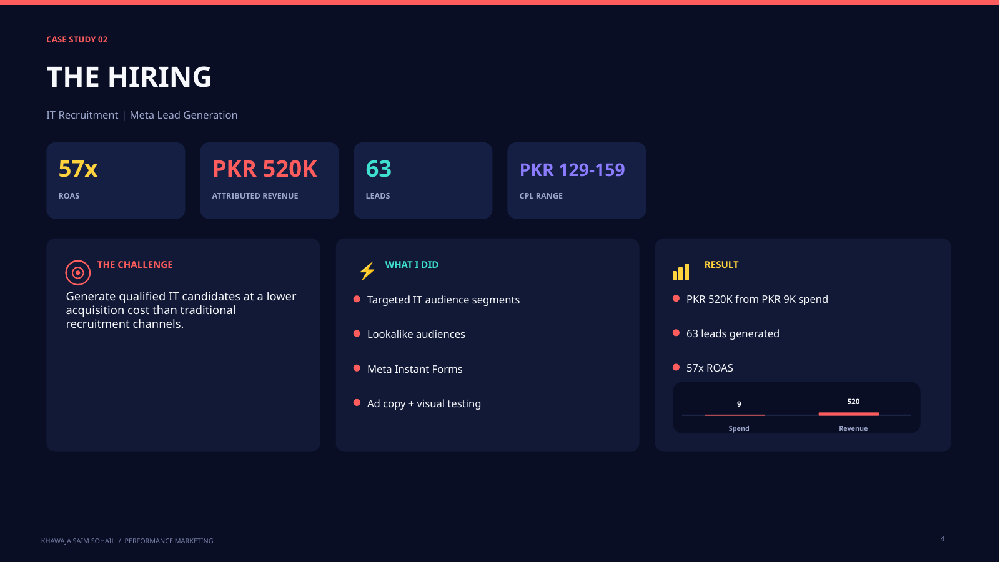

The Hiring
57x ROAS
PKR 9K ad spend generated PKR 520K attributed revenue and 63 leads.
PKR 9KSpend
PKR 520KRevenue
63Leads

I work across Meta Ads and Google Ads with a performance mindset focused on lead quality, acquisition efficiency, controlled testing and business outcomes.
Campaign structure, audience testing, creative testing, lead generation and ongoing optimization across Meta platforms.
Search and app campaign experience with channel selection based on user intent and the campaign objective.
CTR, CPC, CPL, CPA, ROAS and lead-quality signals are used to decide what should be changed, paused or scaled.
The process is designed to make the next budget decision clearer.
Offer, funnel, audience, creative and tracking.
Audience, hook, format, copy and structure.
Use cost and quality signals to find stronger combinations.
Move budget toward repeatable winners while watching efficiency.
Translate platform data into business decisions.
PKR 9K ad spend generated PKR 520K attributed revenue and 63 leads.

One documented recruitment campaign generated PKR 520K in attributed revenue from PKR 9K ad spend, reported as 57x ROAS.
Yes. A UK EdTech app campaign generated 90 installs with $0.36 average CPC, 1.86% CTR and 26,506 impressions.
No. Campaign results depend on the offer, market, budget, creative, tracking and funnel. I focus on disciplined testing and optimization rather than guarantees.